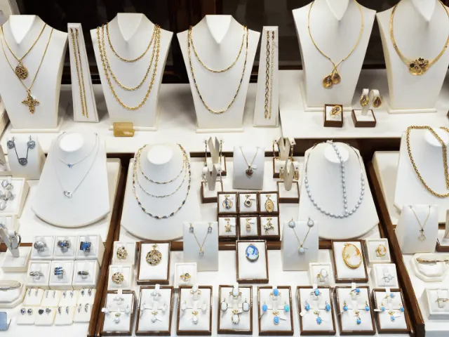
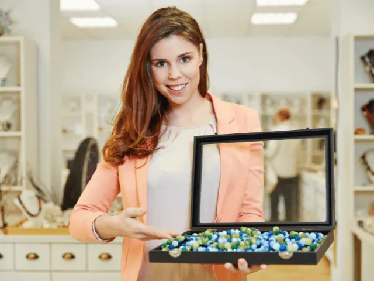
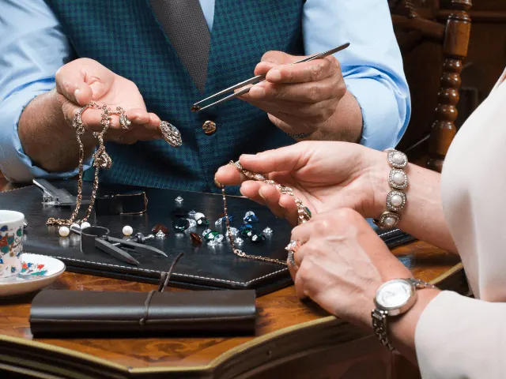

Partnerbijdrage
Ga eens naar de juwelier, om te shinen
Gepubliceerd op 12 mei 2023, bijgewerkt op 24 januari 2024
Onderdeel van de gids Trouwen in Nijmegen en Winkelen in Nijmegen

Je loopt vast wel eens een juwelier voorbij, of je blijft even turen in de etalage. Misschien probeer je dan een reden te verzinnen voor zo’n bijzonder sieraad, of fantaseer je over de dag dat je ten huwelijk wordt gevraagd. Wat je vraag ook is – wanneer je even door het glas naar binnen kijkt – wij hopen in onze blog het antwoord te geven.
Wat is een juwelier eigenlijk?
Verkopen ze alleen sieraden? of doen ze meer? Ja, de meeste juweliers zijn meer dan verkopers. Het zijn vakmensen, ambachtslieden, die prachtige sieraden ontwerpen, maken en verkopen. En het is niet alleen het verkopen van sieraden, het gaat dus om het hele proces. Het is het slijpen van de edelstenen, het precies op maat maken van een ring, het ontwerpen van een uniek sieraad dat speciaal voor jou is gemaakt. Dat is waar het om gaat bij juweliers.
Maar goed, eerlijk is eerlijk, het is vaak niet goedkoop om bij een juwelier te winkelen. Dus het is niet voor iedereen weggelegd. Maar als je iets echt speciaals wilt, iets unieks, dan is een juwelier wel de aangewezen persoon om naar toe te gaan. Ze hebben kennis van zaken, weten alles van edelstenen en edelmetalen en kunnen je adviseren over welk sieraad het beste bij jou past.
Maar eerlijk is eerlijk, het kan ook een beetje ongemakkelijk voelen om bij een juwelier binnen te lopen. Het voelt allemaal zo chique, zo elitair.

Waar kun je terecht als de juwelier boven je budget is?
De meeste juweliers zijn niet echt goedkoop, al komen er steeds meer hippe trendy winkeltjes bij met leuke sieraden, en worden er ook in de grotere winkelketens en online mooie exemplaren verkocht. Misschien niet altijd de beste kwaliteit, maar als je er een beetje zorg voor draagt gaan ze alsnog lang mee. Of je repareert ze een keer tussendoor. En daar zijn juweliers dan weer erg goed in!
Ook kun je tweedehands sieraden kopen. Ga naar rommelmarkten, kringloopwinkels of zoek online naar tweedehands sieraden. Hier kun je vaak unieke stukken vinden voor een lage prijs. En wie weet, misschien vind je wel een verborgen schat.
Wil je toch wel iets bijzonders, dan zul je iets dieper in buidel moeten tasten. En de moed moeten verzamelen om de juwelier in te stappen en eerlijk te zijn over je wensen en je budget. Wie weet hebben ze toch wel een passend juweeltje voor jou in de vitrinekast liggen.

Wanneer ga je naar een juwelier?
Zoals je net al hebt gelezen, is de juwelier er om je sieraden te kopen, en eventueel te repareren. Is er bijvoorbeeld een steentje uit je ring gevallen? Is de sluiting van je ketting stuk? De juwelier heeft het zo gefikst.
Ook kun je bij een juwelier terecht voor taxaties. Heb je een erfstuk gekregen of een bijzonder sieraad gekocht en wil je weten wat de waarde ervan is? Een juwelier kan het voor je taxeren en je een deskundig advies geven. Wie weet levert het je nog iets op, mocht de emotionele waarde lager liggen dan de prijs.

Welke juweliers vind je in Nijmegen?
In Nijmegen heb je juweliers die producten aanbieden in verschillende prijscategorieën. Bij sommige kun je ook gaatjes in je oren laten schieten, en andere bieden weer reparaties en taxaties aan.
Juwelier Eugene van Baal
Bij Juwelier Eugene van Baal in Nijmegen wordt u ondergedompeld in een wereld van luxe, schoonheid en vakmanschap. Van tijdloze klassiekers tot hedendaagse ontwerpen, hun zorgvuldig samengestelde collectie spreekt elke smaak aan. Met een toewijding aan kwaliteit en klanttevredenheid, biedt Eugene van Baal een persoonlijke winkelervaring die echt ongeëvenaard is. Hun deskundige team staat klaar om u te helpen bij het vinden van het perfecte sieraad om uw stijl te complimenteren of een speciaal moment te markeren. Bezoek Juwelier Eugene van Baal vandaag nog voor een ervaring die u niet snel zult vergeten.
Paul van Zeeland Juweliers
Welkom bij Paul van Zeeland Juweliers in Nijmegen, waar elegantie en vakmanschap samenkomen in een prachtige selectie van sieraden en horloges. Met een passie voor uitzonderlijke kwaliteit en oog voor detail, bieden zij stukken aan die generaties lang meegaan. Of u nu op zoek bent naar een sprankelende verlovingsring, een stijlvol horloge, of een uniek sieraad om uw persoonlijke stijl te benadrukken, Paul van Zeeland heeft het voor u. Hun ervaren team zorgt voor een persoonlijke en deskundige service, en begeleidt u graag in uw zoektocht naar het perfecte stuk. Ontdek het zelf bij Paul van Zeeland Juweliers in Nijmegen.
Ruud de Vries juweliers
Bij Ruud de Vries Juweliers in Nijmegen ontdekt u een schitterende mix van traditioneel vakmanschap en moderne elegantie. Als u hun winkel binnenstapt, wordt u verwelkomd door een breed scala aan prachtige sieraden en verfijnde horloges. Of u nu op zoek bent naar een tijdloos erfstuk of een eigentijds stuk om uw stijl te versterken, bij Ruud de Vries vindt u het. Ze bieden een persoonlijke service om u te helpen bij het vinden van het perfecte sieraad voor elke gelegenheid. Kom langs in hun winkel in Nijmegen voor een ongeëvenaarde winkelervaring.
Goudsmit Nijmegen
Bij Goudsmit Nijmegen kunt u uw droom sieraad tot leven laten komen. Hier vormen vakmanschap en uw persoonlijke stijl de basis voor een uniek, handgemaakt sieraad dat precies bij u past. Hun ervaren goudsmeden nemen de tijd om uw wensen te begrijpen en vertalen deze in een prachtig stuk dat u nergens anders vindt. Of u nu een elegante ring of een betekenisvolle halsketting wilt, bij Goudsmit Nijmegen wordt uw visie werkelijkheid. Kom langs en start het proces van het creëren van uw unieke sieraad.
Conclusie
Winkelen in Nijmegen is niet compleet zonder een bezoek aan een van de lokale juweliers. Deze juweliers zijn niet alleen verkooppunten, maar ook vakmensen die het hele proces van sieraden maken beheersen. Of je nu op zoek bent naar iets unieks, een reparatie nodig hebt, of gewoon wilt bladeren, de juweliers in Nijmegen bieden voor elk wat wils. Hoewel winkelen bij een juwelier soms duur kan zijn, zijn er opties voor elk budget, van tweedehands vondsten tot betaalbare, trendy items. Juweliers zoals Eugene van Baal, Paul van Zeeland, Ruud de Vries, en Goudsmit in Nijmegen, bieden elk hun eigen unieke winkelervaring. Dus, als je gaat winkelen in Nijmegen, overweeg dan zeker een bezoek aan een van deze juweliers voor een bijzondere toevoeging aan je ervaring.
OVERZICHT JUWELIERS
BEKIJKJuweliers in Nijmegen
Zin om te beginnen? In onze bedrijvengids vind je alle 19 juweliers in Nijmegen, met openingstijden, kenmerken en een kaart.
Bekijk alle 19 juweliers in Nijmegen
Heb je zelf een juwelier? Laat je hier uitlichten.